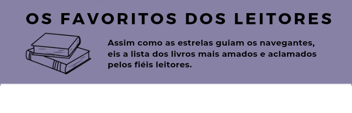
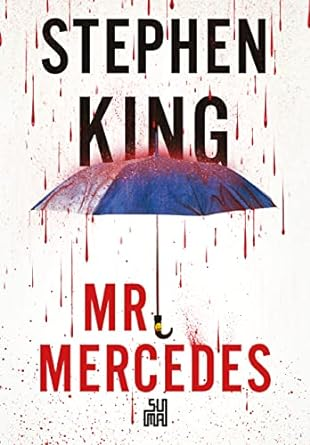
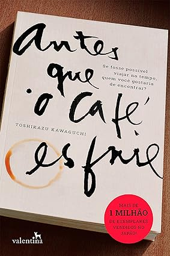
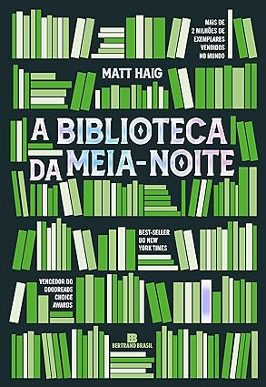
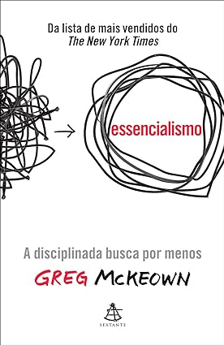
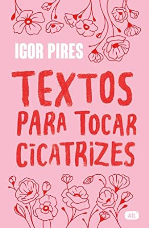
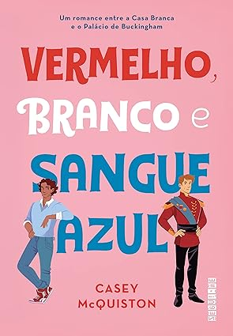

Mais Vendidos


Mr. Mercedes
Stephen King
R$ 47,62
A paciente silenciosa
Alex Michaelides
R$ 33,16

Antes que o café esfrie
Toshikazu Kawaguchi
R$ 25,70

Pessoas normais
Sally Rooney
R$ 40,30

É assim que acaba
Colleen Hoover
R$ 23,55

A Biblioteca da Meia-Noite
Matt Haig
R$ 40,30
Eu e esse meu coração
C. C. Hunter
R$ 25,56
Tudo é rio
Carla Madeira
R$ 32,90
O homem mais rico da Babilônia
George S Clason
R$ 14,90

Verity
Colleen Hoover
R$ 27,12

Todas as suas (im)perfeições
Colleen Hoover
R$ 23,66

É assim que começa
Colleen Hoover
R$ 22,90
Preconceito: uma história
Leandro Karnal
R$ 47,04

Essencialismo
Greg McKeown
R$ 35,99

Textos para tocar cicatrizes
Igor Pires
R$ 44,54

Vermelho, branco e sangue azul
Casey McQuiston
R$ 24,49